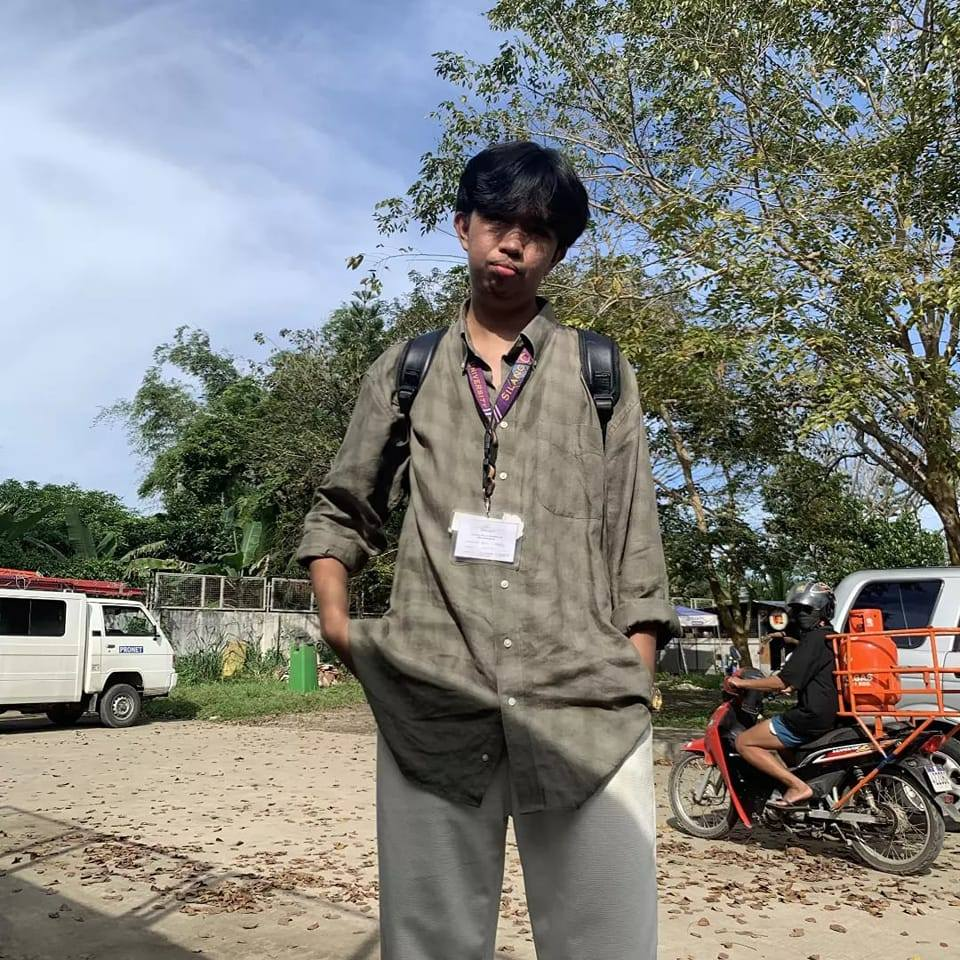

IT Student | Aspiring Web Developer
Hello! I am Carl Luis Dimapilis, an aspiring Web Developer and an IT student. I am passionate about creating
user-friendly and visually appealing websites. I am currently studying at Cavite State University - Silang
Campus, where I am expanding my knowledge and skills in Information Technology. I have a strong foundation
in web development fundamentals, and I am always eager to learn new technologies and techniques.
Download CV
My Journey
My journey into the world of web development began during my early years in college. I was fascinated by how
websites could connect people and provide access to information from anywhere in the world. I started
exploring HTML, CSS, and JavaScript, and I was quickly hooked.
As I progressed through my studies, I had the opportunity to work on various projects, both individually and
in teams. These experiences allowed me to apply my skills and learn from others. I also actively participated
in workshops and online courses to stay up-to-date with the latest trends and technologies.
I am constantly seeking new challenges and opportunities to grow as a web developer. I am excited to contribute
my skills and passion to create meaningful and impactful web experiences.